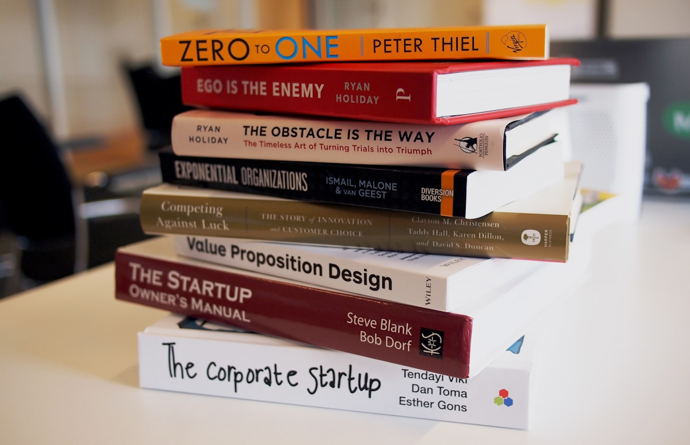

Helping the neurodivergent, deaf, hard of hearing,
or people who just like to read

The idea for transcribing podcasts to ebooks came about whilst listening to a podcast that was very scientific, with a lot of details. I wanted to capture what the person was saying and be able to go back and review, highlight, create notes, study, etc.
Podcast transcripts are nice and all, but difficult to find and organize. Pod2Book gives you a proper eBook with chapters, covers, and all the features you expect—perfect for your library.

95-98% accuracy using state of the art AI. Professional quality transcription that captures every word.
Podcast thumbnail becomes the cover. Each episode becomes a chapter. Customizable copyright and about pages.

Paste Apple Podcasts or Spotify URL, select episodes, & boom! Done. Build your personal podcast library.

Everything runs locally on your Mac. No cloud, & no tracking. Your podcasts stay private.
The idea for transcribing podcasts to eBooks came about whilst listening to a podcast that was very scientific, with a lot of information & details. I wanted to capture what the person was saying and be able to go back and review, highlight, create notes, study, etc. Then came different podcasts I wanted to do the same thing with.
I then thought to myself, "Self, this could also be valuable for people that are neurodivergent, or just like to read." I also shared the idea with someone else, and they were like, "Oh yeah that would help people that are deaf or hard of hearing too." I wish I thought of that part myself.
Podcast transcripts are nice and all, but difficult to find and organize. What I would really like is to have a storefront/library that has all these podcasts-turned-eBooks organized by author that could then be subscribed to on your eBook reader of choice.
Well, since I don't own the copyright to any of these, I figured—why not make it easy for everyone to create their own libraries? You can use Calibre to organize your collection.
Thanks,
Ben Francom